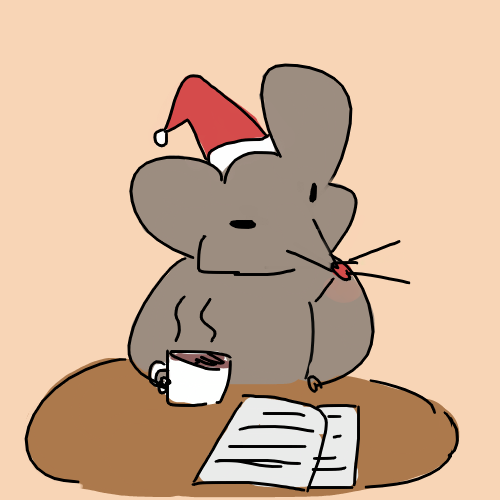

前 아프리카TV BJ 現 트위치TV 스트리머. MCN 전문기업인 DIA TV에 소속되어있다. 트위치에서는 한글 닉네임을 사용하지 않고 아이디 겸 영어닉인 moonbowzz를 고정으로 사용한다. 닉네임인 moonbowzz는 실제 있는 단어인 moonbow에서 유래한 듯 하다. 본인 말로는 moonbow 뒤에 z가 2개가 붙는 게 정석이긴 하지만 이미 아이디가 존재하면 z 개수를 달리한다고. 본인을 회색 혹은 연한 하늘색의 머리카락에 파란 눈을 가진, 쥐의 귀가 달려있는 캐릭터로 표현한다.  [출처 네이버카페 moonbowzz 장학재단 공식카페]
트위치 구독자 아이콘은 치즈. 이모티콘은 2017년 10월 1일 기준 bowzzHi, bowzzBye, bowzzReservist, bowzzYee, bowzzYeee, bowzzOo, bowzzAngry, bowzzBody, bowzzBread, bowzzJeer, bowzzDance, bowzzCry 이렇게 기본 12개이며 $9.99 구독자용 이모티콘인 bowzzGolden 그리고 $24.99 구독자용 이모티콘인 bowzzVVV까지 포함하면 총 14개이다.